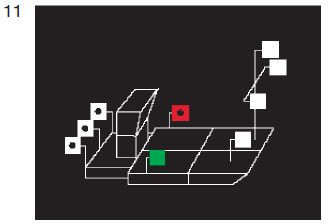

- aa)
drei Topplichter auf dem Vorschiff des Fahrzeugs oder, bei mehreren Fahrzeugen, auf dem Vorschiff des linken der Fahrzeuge an der Spitze des Verbandes; diese Topplichter müssen in der Form eines gleichseitigen Dreiecks mit waagerechter Grundlinie in einer Ebene senkrecht zur Längsebene des Verbandes angeordnet sein; die beiden unteren Topplichter müssen in einem Abstand von 1,25 m voneinander und 1,10 m unter dem obersten Topplicht gesetzt werden; sie müssen darüber hinaus auf einem Fluss mindestens 2,00 m über der Ebene der Einsenkungsmarken und mindestens 1,00 m über den Seitenlichtern, auf einem Schifffahrtskanal oder in einem Schleusenkanal so hoch wie möglich, jedoch mindestens in Höhe der Seitenlichter gesetzt werden; - bb)
ein Topplicht auf dem Vorschiff jedes anderen Fahrzeugs, dessen ganze Breite von vorn sichtbar ist; dieses Topplicht ist nach Möglichkeit 3,00 m tiefer als das oberste Topplicht nach Doppelbuchstabe aa hiervor zu setzen.
|  |